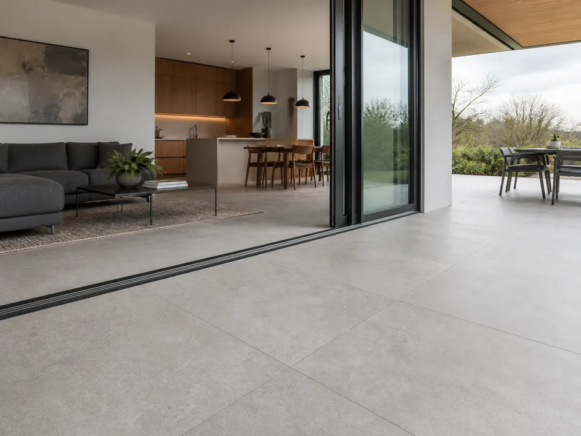

Pagrindo plokštuma
Lazeriu patikrinamas lygumas, įvertinami aukščiai, durų angos ir gretimų dangų sujungimai.
Klojamos didelio formato keraminės ir akmens masės plytelės ant grindų, sienų bei terasose. Darbai planuojami pagal plytelių geometriją, pagrindą ir patalpos ašis.

Lazeriu patikrinamas lygumas, įvertinami aukščiai, durų angos ir gretimų dangų sujungimai.
Suderinamos pagrindinės ašys, kraštinių pjūviai, rašto kryptis ir siūlių tęstinumas.
Parenkamos formatui bei pagrindui tinkamos medžiagos, siekiama reikiamo klijų kontakto.
Naudojama plytelių lyginimo sistema, kontroliuojami aukščiai ir suplanuojamos deformacinės siūlės.
Svetainėse, virtuvėse, holuose, vonios kambariuose ir tinkamai įrengtose lauko terasose. Žr. ir vonios plytelių klijavimą.
Darbai atliekami Pabradėje, Švenčionių rajone ir pagal grafiką Vilniuje.
Atsiųskite formatą, gaminio nuorodą, plotą ir pagrindo nuotraukas.